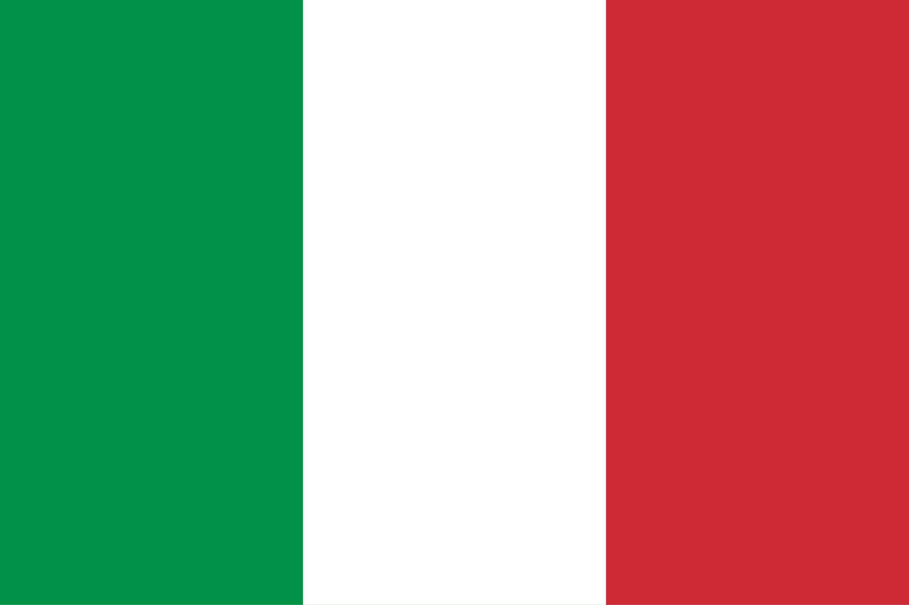

San Diego
San Diego is a city located in SoCal, with a very chill vibe and days full of sun with cool breezes.
It's a place where you can rock a sweather or t-shirt in the same week. With a very diverse demographic,
it is full of lots of different backgrounds and interesting people.
- State: California
- Country: United States of America
- Population:1.39 million
- Coordinates: 32.7157° N, -117.1647° W
- Flag:

⬅ Back to Homepage

San Francisco
San Francisco is a vibrant city in Northern California, famous for its rolling hills, the Golden Gate Bridge, and historic cable cars. It has a rich cultural scene with diverse neighborhoods like Chinatown, Mission District, and Fisherman’s Wharf. The city is also known for its innovation hub, Silicon Valley, just south of it.
- State: California
- Country: United States of America
- Population: 827,526
- Coordinates: 37.775° N, 122.419° W
- Flag:
⬅ Back to Homepage

Julian
Julian is a charming small town in the mountains of Southern California, known for its gold rush history. Today, it is most famous for its delicious homemade apple pies and welcoming atmosphere. Visitors also enjoy its scenic landscapes, hiking trails, and historic buildings.
- State: California
- Country: United States of America
- Population: 1,720
- Coordinates: 34.56° N, 78.90° W
- Flag:
⬅ Back to Homepage

Rome
Rome, the capital of Italy, is often called the “Eternal City” because of its long and influential history. It’s home to iconic landmarks such as the Colosseum, the Roman Forum, and Vatican City. Modern Rome blends ancient ruins, Renaissance art, and lively Italian culture.
- Comune: Lazio
- Country: Italy
- Population: 2,746,984
- Coordinates: 41.893 N, 12.483° E
- Flag: 
⬅ Back to Homepage
Chicago
Chicago, located in Illinois along Lake Michigan, is one of the largest cities in the United States. It is famous for its skyline, deep-dish pizza, blues and jazz music, and sports culture. The city combines modern architecture with rich history, including the legacy of the 1893 World’s Fair.
- State: Illinois
- Country: United States of America
- Population: 2.74 million
- Coordinates: 41.878° N, 87.630° W
- Flag:
⬅ Back to Homepage